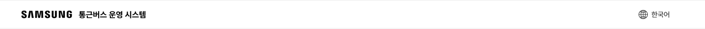
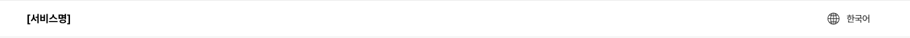
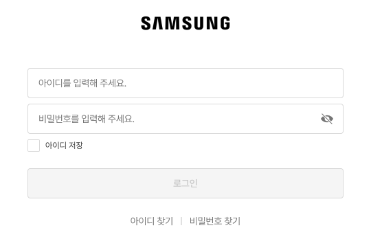
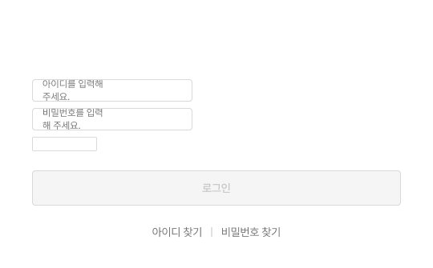
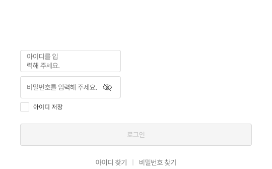

웹_로그인 화면 — 검수기 교체 전/후
설치기의 실제 검수 엔진(현재 판)으로 화면 사본을 검사하고, 교체 후보 6개를 모두 바꿔 본 결과입니다. 원본은 그대로 두고 오른쪽 사본에서만 바꿨습니다.
① 상단 바 (login_GNB → LoginGNB)


- 서비스명이 사라짐 — "통근버스 운영 시스템"이 부품 기본 글자 "[서비스명]"으로 바뀜
- SAMSUNG 로고가 사라짐 — 새 부품에 로고 자리가 없거나 옮겨지지 않음
② 로그인 폼 — 교체 전 / 1차 / 고친 뒤



- 인풋 높이 44 그대로 — 옛 크기를 높이로 맞춰 새 부품의 MD로 이음
- 비밀번호 눈 아이콘 유지 — 새 부품의 비밀번호 아이콘을 켜서 이음
- "아이디 저장" 라벨 유지 — 체크박스 옆 글자를 라벨로 읽고, 같은 크기·굵기의 정본 글자 스타일(body/12R)로 옆에 붙임. 간격 8도 그대로
- 체크박스 크기 18×18 — 81폭으로 늘어나던 것 고침
- 인풋 안쪽 입력칸은 여전히 200폭 — 부품 자체 구조 문제라 검수기로는 못 고침(결정 필요)
- 가운데 SAMSUNG 로고는 여전히 안 보임 — 첫 추천이 에스원 흰색 로고
부품별 결과
| 부품 | 바뀐 것 | 폭 | 문제 |
|---|---|---|---|
| input (아이디) | input → Input MD | 460(바깥) / 200(안쪽) | 안쪽 폭 고정만 남음 |
| input (비밀번호) | input → Input MD · 아이콘 켬 | 460(바깥) / 200(안쪽) | 안쪽 폭 고정만 남음 |
| checkbox | checkbox → Checkbox + 라벨 | 18 + 라벨 | 해결 |
| 로고 | Samsung_30 → CI (에스원·흰색) | 134 → 134 | 다른 브랜드·흰색이라 안 보임 |
| login_GNB | login_GNB → LoginGNB | 1920 → 1920 | 서비스명·로고 빠짐 |
| login_Footer | login_Footer → Footer (확인 필요 후보) | 1920 → 1920 | 링크 "이용약관"이 하나 더 생김(화면 밖이라 그림엔 안 보임) |
| Button | 이미 최신 — 교체 안 함 | 460 | 문제 없음 |